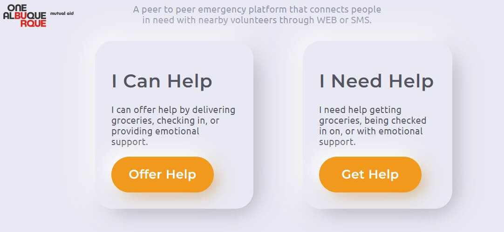
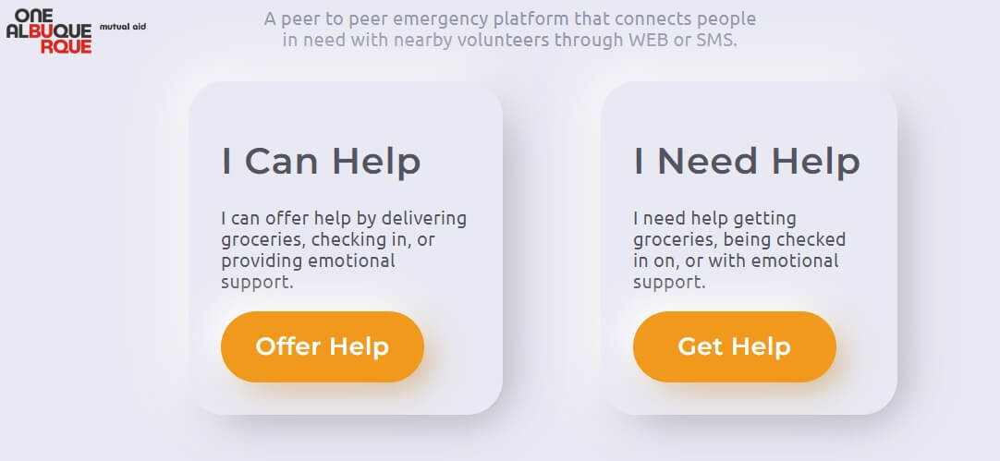

-
job projects
-
Video meeting app for adult foster care
Feb. 2022 - Oct. 2022 & Sep. 2023 - Present
Technologies: React.js, Node.js, GraphQL, Prisma, mySQL, Telnyx, SendGridI initially joined as a FrontEnd developer, focusing on ADA compliance, adding new pages, and implementing buttons. As I gained a deeper understanding of the app's architecture and backend, I transitioned into a FullStack Developer role.
You can click here to see the app. However, please note that you won't be able to experience all the features without an account. More details about my work on this project -
School Management App
Oct. 2022 - Sep. 2023
Technologies: React.js, Node.js, Express.js, Sequelize, Swagger, Redux toolkit, RedisCollaborated as a FullStack developer within a tight-knit team, where we embarked on creating a comprehensive app tailored for schools. The application streamlines administrative tasks for teachers and school staff by offering login through a Google account linked to an Edlink (ed.link) account. This encompasses various functionalities, including class management and lesson planning, with data stored in Google Drive. More details about my work on this project
-
Blog and support for LGBTQ+ teens
Feb. 2022
Technologies: Javascript, HTML, CSSServed as a FrontEnd developer, addressing visual bugs and crafting beneficial tools within the application.
More details about my work on this project
https://imi.guide/ -
Scraper for LinkedIn
Dec. 2021 - Jan. 2022
Technologies: Django, GoogleCloudStorage, ScraperAPICollaborated with a seasoned developer, functioning as a BackEnd developer on an application designed to extract important information efficiently from public LinkedIn profiles. More details about my work on this project
-
LA Parks, a site where you can see parks and book parts of a park for activities
Oct. 2021 - Dec. 2021
Technologies: React.js, Drupal, DockerCollaborated within a team, serving as a FrontEnd developer for a brief duration. Addressed and resolved visual bugs and logic issues on the FrontEnd. This initial project provided valuable insights into working as a developer in a tech company, contributing significantly to my learning experience.
https://www.laparks.org/ More details about my work on this project -
Internship project
Jun. 2021 - Sep. 2021
Technologies: React.js, Express.js, MongoDB, ReduxWorked as FullStack developer in a team of two, on an application where users can search for tasks and assign them to themselves. Additionally, users have the option to list a task, and another user can offer assistance with that task.
More details about my work on this project 

-
-
SFAW internal Hackathon
-
More details about my work on this project
Dear diary
Technologies: React.js, Node.js, OpenAISFAW organized an internal Hackathon in Feb 2023, where employees had the opportunity to form teams and tackle real-world problems using AI. My team and I opted to develop an app designed as a diary for children. Users would be prompted to share information about their day, create a poetic story, generate accompanying illustrations, and even recite the narrative. The app would then collect feedback on how the user felt after experiencing the story, storing all responses. As part of our feature development, we aimed to implement a graphical representation of the feedback and adjust the storytelling approach to enhance long-term user happiness.
-
-
school projects
-
Online shop
Technologies: Next.js, GraphQL, GraphCMSOn this project I used Next.js to create the FrontEnd, used Next APIs to create login and signup. Created DB using GraphCMS.
More details about my work on this project -
Guest house
Technologies: HTML, CSS, JQueryA site for a guest house where you can see rooms and create an account. No BackEnd. Over engineered project on FrontEnd for the sake of exercising.
Click here to see it! More details about my work on this project -
App for a family doctor
Technologies: JavaApp contains a table for diseases, pacients, drugs and appointment. I used ModelViewController design pattern. Created GUI using Swing in Java.
Click here to see the source code!
-
-
Personal projects
-
Library
Technologies: TypeScript, React, Noden GraphQL, SCSS, MaterialUI, Postgres, TypeORM, VercelDesigned to manage books, enabling users to store, view, add, update, and delete entries. Developed as a personal project, the primary aims were to gain proficiency in TypeScript, deploy a full-stack application on Vercel, and implement the MVC design pattern.
App: https://library-client-ten.vercel.app/
Code:
client
server More details about my work on this project
-